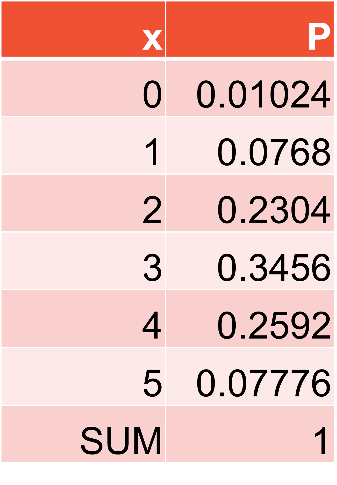
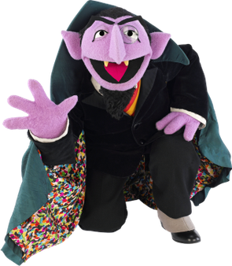

ENVX1002 Introduction to Statistical Methods
The University of Sydney
Feb 2024
At the end of this topic students should able to:
Remember the types of data
Numerical
Categorical
\Sigma_{i=0}^5P(X=i)=0.01024+0.0768+0.2304+0.3456+0.2592+0.07776=1
{5\choose{2}}=\frac{5!}{2!(5−2)!}= \frac{(5×4×3×2×1)}{(2×1×3×2×1)}=10
P(X=x)={n\choose{x}}p^x(1-p)^{n-x}={5\choose{2}}0.6^2(1-0.6)^{5-2}
=10×0.36×0.064=0.2304

P(X\ge{2})=(X=2)+(X=3)+(X=4)+(X=5)=0.2304+0.3456+0.2592+0.07776=0.91296
P(2\le{X}\le{4})=??
P(X\ge{2})
- =1-BINOM.DIST(1,5,0.6,TRUE)
P(2 \le X \le 4)
- =BINOM.DIST(4,5,0.6,TRUE)-BINOM.DIST(1,5,0.6,TRUE)
\mu_x=np
=5\times{0.6} = 3 On average 3 flies die in 5 trials
\sigma_x^2=np(1-p)
=5\times{0.6}(1-0.6)=1.2 with a variance of 1.2 flies

X\sim{Po(\lambda)}
| Year | GC | C1 | C2 | C3 | C4 | C5 | C6 | C7 | C8 | C9 | C10 | C11 | C14 | C15 |
|---|---|---|---|---|---|---|---|---|---|---|---|---|---|---|
| 1875 | 0 | 0 | 0 | 0 | 0 | 0 | 0 | 1 | 1 | 0 | 0 | 0 | 1 | 0 |
| 1876 | 2 | 0 | 0 | 0 | 1 | 0 | 0 | 0 | 0 | 0 | 0 | 0 | 1 | 1 |
| 1877 | 2 | 0 | 0 | 0 | 0 | 0 | 1 | 1 | 0 | 0 | 1 | 0 | 2 | 0 |
| 1878 | 1 | 2 | 2 | 1 | 1 | 0 | 0 | 0 | 0 | 0 | 1 | 0 | 1 | 0 |
| 1879 | 0 | 0 | 0 | 1 | 1 | 2 | 2 | 0 | 1 | 0 | 0 | 2 | 1 | 0 |
| 1880 | 0 | 3 | 2 | 1 | 1 | 1 | 0 | 0 | 0 | 2 | 1 | 4 | 3 | 0 |
| 1881 | 1 | 0 | 0 | 2 | 1 | 0 | 0 | 1 | 0 | 1 | 0 | 0 | 0 | 0 |
| 1882 | 1 | 2 | 0 | 0 | 0 | 0 | 1 | 0 | 1 | 1 | 2 | 1 | 4 | 1 |
| 1883 | 0 | 0 | 1 | 2 | 0 | 1 | 2 | 1 | 0 | 1 | 0 | 3 | 0 | 0 |
| 1884 | 3 | 0 | 1 | 0 | 0 | 0 | 0 | 1 | 0 | 0 | 2 | 0 | 1 | 1 |
| 1885 | 0 | 0 | 0 | 0 | 0 | 0 | 1 | 0 | 0 | 2 | 0 | 1 | 0 | 1 |
| 1886 | 2 | 1 | 0 | 0 | 1 | 1 | 1 | 0 | 0 | 1 | 0 | 1 | 3 | 0 |
https://en.wikipedia.org/wiki/Ladislaus_Bortkiewicz
library(tidyverse)
frequency_kick <- kick %>%
select(-Year) %>%
pivot_longer(cols = everything(), names_to = "Column", values_to = "Deaths") %>%
count(Deaths) %>%
arrange(Deaths) %>%
mutate(Total_Deaths = Deaths*n) %>%
mutate(Probability = "?")
kable(frequency_kick)| Deaths | n | Total_Deaths | Probability |
|---|---|---|---|
| 0 | 144 | 0 | ? |
| 1 | 91 | 91 | ? |
| 2 | 32 | 64 | ? |
| 3 | 11 | 33 | ? |
| 4 | 2 | 8 | ? |
X\sim{Po(\lambda)}
P(X=x)=\frac{\lambda^x e^{-\lambda}}{x!} x=0,1,2,... \lambda>0
frequency_kick1 <- kick %>%
select(-Year) %>%
pivot_longer(cols = everything(), names_to = "Column", values_to = "Deaths") %>%
count(Deaths) %>%
arrange(Deaths) %>%
mutate(Total_Deaths = Deaths*n) %>%
mutate(Probability = c(0.497, 0.348, 0.122, 0.028, 0.005)) %>%
mutate(Observed_Probability = n/280)
kable(frequency_kick1)| Deaths | n | Total_Deaths | Probability | Observed_Probability |
|---|---|---|---|---|
| 0 | 144 | 0 | 0.497 | 0.5142857 |
| 1 | 91 | 91 | 0.348 | 0.3250000 |
| 2 | 32 | 64 | 0.122 | 0.1142857 |
| 3 | 11 | 33 | 0.028 | 0.0392857 |
| 4 | 2 | 8 | 0.005 | 0.0071429 |
- =POISSON(1,0.7,TRUE)
- =POISSON(2,0.7,FALSE)
# Parameters for the binomial distribution
n <- 100
p <- 0.05
# Calculating lambda for the Poisson approximation
lambda <- n * p
# Generate the range of values
x <- 0:n
# Data frames for plotting
data_binom <- data.frame(x = x, probability = dbinom(x, n, p), Distribution = "Binomial")
data_pois <- data.frame(x = x, probability = dpois(x, lambda), Distribution = "Poisson")
# Combine data
data_combined <- rbind(data_binom, data_pois)
# Create the plot
p <- ggplot(data_combined, aes(x = factor(x), y = probability, fill = Distribution)) +
geom_bar(stat = "identity", position = position_dodge()) +
ggtitle("Binomial vs Poisson Distribution") +
xlab("Number of successes") +
ylab("Probability") +
scale_fill_manual(values = c("blue", "red")) +
theme_minimal() +
scale_x_discrete(breaks = seq(0, n, by = 10)) # Display every 10th labelThis presentation is based on the SOLES Quarto reveal.js template and is licensed under a Creative Commons Attribution 4.0 International License.